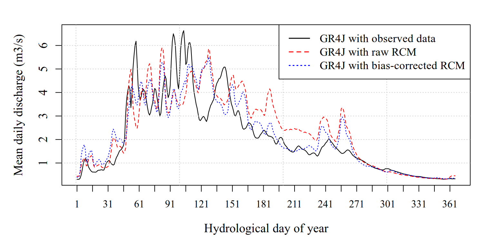
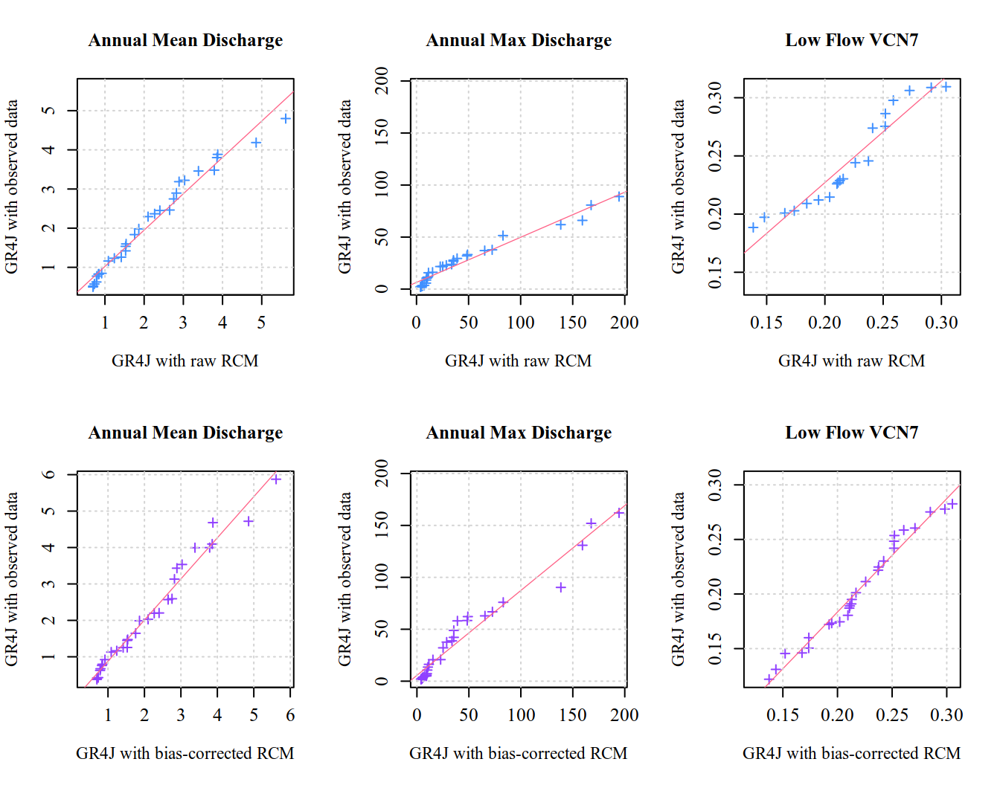

library(zoo)
library(airGR)
library(dplyr)
library(tidyr)
library(lubridate)
library(EnvStats)Hydrological validation of bias-corrected climate data
1 Load necessary libraries
2 Load preprocessed observational data
hist_obs = readRDS("output_preprocessed/processed_obsdata_lez.rds")
head(hist_obs) Date P T PET Q
1 1977-01-01 2.85 6.8425 0.75 14.561798
2 1977-01-02 0.00 4.6035 0.90 11.649438
3 1977-01-03 0.00 3.3415 1.55 7.766292
4 1977-01-04 1.70 2.9455 2.25 5.824719
5 1977-01-05 6.40 3.9835 1.00 4.853933
6 1977-01-06 5.95 4.8015 0.70 3.9947873 Hydrological validation of the CNRM bias Correction using the GR4J model (historical period)
In this section, we will run hydrological experiments or simulations using calibrated GR4J model driven by observed hydroclimatic data and bias-corrected RCMs outputs. We first load CNRM data (raw and bias-corrected) and the optimized GR4J parameters derived in the GR4J model calibration section.
# climate data
adjCNRM_MBCn = readRDS("output_biascorrection/biascorrectedCNRM-MBCn.rds")
lapply(adjCNRM_MBCn, function(df) head(df, 5))$histCNRM_adj
Date PR PR_adj PET PET_adj
1 1977-01-01 0 0 0.6549132 0.80
2 1977-01-02 0 0 0.6684382 0.75
3 1977-01-03 0 0 0.7041511 1.00
4 1977-01-04 0 0 0.6641879 0.75
5 1977-01-05 0 0 0.7342219 1.05
$rcp45CNRM_adj
Date PR PR_adj PET PET_adj
1 2070-01-01 0.0000000 0.0000000 0.4991833 0.1612438
2 2070-01-02 1.1682000 4.4883547 0.5232178 0.3464530
3 2070-01-03 0.0019633 0.0000000 0.7814048 1.2669033
4 2070-01-04 0.1963200 0.1165795 0.7076990 0.8933898
5 2070-01-05 3.1049000 2.9958859 0.5511199 0.3995832
$rcp85CNRM_adj
Date PR PR_adj PET PET_adj
1 2070-01-01 0.290380 0.000000 0.7171000 0.9233446
2 2070-01-02 3.892100 3.309224 0.7403796 0.7461179
3 2070-01-03 0.623500 0.000000 0.7864600 1.1008050
4 2070-01-04 0.000000 0.000000 0.9676216 1.5583272
5 2070-01-05 0.080232 1.147392 1.0305621 1.5009892# GR4J params
gr4j_param = readRDS("output_modelcalibration/fittedGR4J_lez.rds")
gr4j_param[1] 247.151127 1.319029 116.745926 1.202703Before running the GR4J simulations, we source the run_gr4j_simulation(...) helper function that prepares all required input objects for the model using already calibrated parameters. This function streamlines the simulation workflow, avoids repeating the input preparation steps, and ensures consistency across all model runs.
github_repo = paste0("https://raw.githubusercontent.com/",
"diopBachir/tp_modhydroclimat/main/")
source(file.path(github_repo, "helper_functions/run_gr4j_simulation.R"))Reference simulation (Benchmark using station data):
Qobs_data = hist_obs$Q
gr4jsim_hist_obs = run_gr4j_simulation(
hist_obs, "P", "PET", Qobs_data, gr4j_param
)
head(gr4jsim_hist_obs) Date Qobs Qsim
1 1977-01-01 14.561798 1.0178840
2 1977-01-02 11.649438 0.9686676
3 1977-01-03 7.766292 0.9017846
4 1977-01-04 5.824719 0.8515594
5 1977-01-05 4.853933 0.8420785
6 1977-01-06 3.994787 0.8684683Next, we run the GR4J over the historical raw and bias-corrected data.
gr4jsim_histCNRM_raw = run_gr4j_simulation(
na.omit(adjCNRM_MBCn[["histCNRM_adj"]]), "PR", "PET", Qobs_data, gr4j_param
)
head(gr4jsim_histCNRM_raw) Date Qobs Qsim
1 1977-01-01 14.561798 1.0035856
2 1977-01-02 11.649438 0.9434003
3 1977-01-03 7.766292 0.8894195
4 1977-01-04 5.824719 0.8409849
5 1977-01-05 4.853933 0.7973145
6 1977-01-06 3.994787 0.7577502gr4jsim_histCNRM_adj = run_gr4j_simulation(
adjCNRM_MBCn[["histCNRM_adj"]], "PR_adj", "PET_adj", Qobs_data, gr4j_param
)
head(gr4jsim_histCNRM_adj) Date Qobs Qsim
1 1977-01-01 14.561798 1.0035835
2 1977-01-02 11.649438 0.9433935
3 1977-01-03 7.766292 0.8894054
4 1977-01-04 5.824719 0.8409612
5 1977-01-05 4.853933 0.7972809
6 1977-01-06 3.994787 0.7577000We define the hydrological year starting on September 1st. Once the hydrological year defined, we will compute the following statistics for the observations and for each climate model simulation:
- Mean annual discharge:
- Annual Maximum
- Annual Minimum 7-day Discharge (VCN7)
- Mean daily hydrograph over the hydrological year
Below, we source two helper functions to compute these metrics ([compute_mean_daily_cycle(...)] and [compute_hydro_indices(..)]) from the online repository.
source(file.path(github_repo, "helper_functions/compute_mean_daily_cycle.R"))
source(file.path(github_repo, "helper_functions/compute_hydro_indices.R"))We can apply these functions to compute the indices for the observed and climate-model-driven GR4J simulations:
# Mean daily streamflow data for GR4J with observed data
ObsmeanDaily = compute_mean_daily_cycle(
gr4jsim_hist_obs, "Observed", "Qobs"
)
# Mean annual discharge, Annual Maximum, and VCN7 for GR4J with observed data
histGR4JObsMetrics = compute_hydro_indices(
gr4jsim_hist_obs, "GR4J with observed", "Qsim"
)
# head(histGR4JObsMetrics)
# Mean daily streamflow data for GR4J with observed data
histGR4JObsmeanDaily = compute_mean_daily_cycle(
gr4jsim_hist_obs, "GR4J with observed", "Qsim"
)
# head(histGR4JObsmeanDaily)
# Mean annual discharge, Annual Maximum, and VCN7 for GR4J with bias-corrected data
RawhistGR4JclimAdjMetrics = compute_hydro_indices(
gr4jsim_histCNRM_raw, "GR4J with raw RCM data", "Qsim"
)
# head(RawhistGR4JclimAdjMetrics)
# Mean daily streamflow for GR4J with observed data
RawhistGR4JclimAdjmeanDaily = compute_mean_daily_cycle(
gr4jsim_histCNRM_raw, "GR4J with raw RCM data", "Qsim"
)
# head(RawhistGR4JclimAdjmeanDaily)
# Mean annual discharge, Annual Maximum, and VCN7 for GR4J with bias-corrected data
AdjhistGR4JclimAdjMetrics = compute_hydro_indices(
gr4jsim_histCNRM_adj, "GR4J with bias-corrected data", "Qsim"
)
# head(AdjhistGR4JclimAdjMetrics)
# Mean daily streamflow for GR4J with observed data
AdjhistGR4JclimAdjmeanDaily = compute_mean_daily_cycle(
gr4jsim_histCNRM_adj, "GR4J with bias-corrected data", "Qsim"
)
# head(AdjhistGR4JclimAdjmeanDaily)We can now compare observed indices with their simulated counterparts. For mean annual discharge, annual maximum discharge, and VCN7, scatter plots against the 1:1 line (QQ-plot–style comparisons) are used, as they provide a direct visualization of model bias and dispersion. In contrast, a time-serie representation of the mean daily discharge over the hydrological year is more appropriate for assessing the model’s ability to reproduce the seasonal streamflow cycle.
Show the code
# Combine observed, raw, and adjusted mean daily cycles into a single data frame
daily_cycle_plot = ObsmeanDaily %>%
select(HydroDOY, Obs = MeanDailyQ) %>%
left_join(histGR4JObsmeanDaily %>% select(HydroDOY, gr4jObs = MeanDailyQ), by = "HydroDOY") %>%
left_join(RawhistGR4JclimAdjmeanDaily %>% select(HydroDOY, gr4jRaw = MeanDailyQ), by = "HydroDOY") %>%
left_join(AdjhistGR4JclimAdjmeanDaily %>% select(HydroDOY, gr4jAdj = MeanDailyQ), by = "HydroDOY")
# 5-day moving average to reduce noise and highlight the seasonal signal
daily_cycle_plot$Obs_smooth = rollmean(daily_cycle_plot$Obs, k = 30, fill = "extend")
daily_cycle_plot$gr4jObs_smooth = rollmean(daily_cycle_plot$gr4jObs, k = 30, fill = "extend")
daily_cycle_plot$gr4jRaw_smooth = rollmean(daily_cycle_plot$gr4jRaw, k = 30, fill = "extend")
daily_cycle_plot$gr4jAdj_smooth = rollmean(daily_cycle_plot$gr4jAdj, k = 30, fill = "extend")
par(mfrow = c(1, 1), mar = c(5, 5, 2, 2), family = "serif")
y_range = range(c(daily_cycle_plot$Obs_smooth,
daily_cycle_plot$gr4jObs_smooth,
daily_cycle_plot$gr4jRaw_smooth,
daily_cycle_plot$gr4jAdj_smooth), na.rm = TRUE)
plot(daily_cycle_plot$HydroDOY, daily_cycle_plot$Obs_smooth,
type = "l",
lwd = 1.9,
lty = 3,
col = "black",
ylim = y_range,
xlab = "Days of hydrological of year",
ylab = "Mean daily discharge [m3.s]",
xaxt = "n",
cex.lab = 1,
cex.axis = 1,
cex.main = 1)
axis(1, at = seq(1, 365, 15))
lines(daily_cycle_plot$HydroDOY, daily_cycle_plot$gr4jObs_smooth,
col = "#3fa86bff", lwd = 1.8, lty = 1)
lines(daily_cycle_plot$HydroDOY, daily_cycle_plot$gr4jRaw_smooth,
col = "#ffb04e", lwd = 1.8, lty = 1)
lines(daily_cycle_plot$HydroDOY, daily_cycle_plot$gr4jAdj_smooth,
col = "#5aa4ff", lwd = 1.8, lty = 1)
grid(nx = NULL, ny = NULL, col = "lightgray", lty = "dotted")
legend("topright",
legend = c("Observed",
"GR4J with observed data",
"GR4J with raw RCM data",
"GR4J with bias-corrected RCM data"),
col = c("black", "#31d677", "#ffb04e", "#5aa4ff"),
lwd = rep(2.5, 4),
lty = c(3, rep(1,3)),
bty = "o", cex = 1.1)
Show the code
# Prepare the data: Join everything by WaterYear
# We use the 'Obs' metrics (GR4J with observed data) as our X-axis reference
plot_data = histGR4JObsMetrics %>%
select(WaterYear, Obs_Mean = AnMean, Obs_Max = Amax, Obs_VCN7 = minVCN7) %>%
left_join(RawhistGR4JclimAdjMetrics %>%
select(WaterYear, Raw_Mean = AnMean, Raw_Max = Amax, Raw_VCN7 = minVCN7),
by = "WaterYear") %>%
left_join(AdjhistGR4JclimAdjMetrics %>%
select(WaterYear, Adj_Mean = AnMean, Adj_Max = Amax, Adj_VCN7 = minVCN7),
by = "WaterYear")
metrics = list(
list(obs = "Obs_Mean", var = "_Mean", title = "Annual Mean Discharge"),
list(obs = "Obs_Max", var = "_Max", title = "Annual Max Discharge"),
list(obs = "Obs_VCN7", var = "_VCN7", title = "Low Flow VCN7")
)
rows = c("Raw", "Adj")
par(mfrow = c(2, 3), family = "serif", pty = "s")
for(r in rows) {
for(m in metrics) {
obs_vals = na.omit(plot_data[[m$obs]])
sim_col = paste0(r, m$var)
sim_vals = na.omit(plot_data[[sim_col]])
row_lab = ifelse(r == "Raw", "Raw RCM", "Bias-Corrected RCM")
if (m$var == "_VCN7") { # enhance viz :)
obs_vals = obs_vals[obs_vals < 0.31]
sim_vals = sim_vals[sim_vals < 0.31]
}
xlab = ifelse(r == "Raw",
"GR4J with raw RCM",
"GR4J with bias-corrected RCM")
val_range = range(c(obs_vals, sim_vals), na.rm = TRUE)
qqPlot(x = obs_vals,
y = sim_vals,
plot.type = "Q-Q",
qq.line.type = "least squares",
add.line = TRUE,
points.col = ifelse(r == "Raw", "#4090ff", "#9040ff"),
line.col = "#ff6287",
pch = 3,
cex = .9,
cex.lab = 1.1,
cex.axis = 1.2,
xlim = val_range,
ylim = val_range,
main = paste(m$title),
xlab = xlab,
ylab = "GR4J with observed data")
grid()
}
}
4 Exercises
4.1 Exercise 1: Validate the SMHI-MPI bias Correction using the GR4J model (historical period)
Objectives:
- Run GR4J simulations using raw and bias-corrected
SMHI-MPIclimate data. - Compute hydrological indices (Annual Mean, Max, and VCN7) for these simulations.
- Compare the results with the reference simulation (GR4J driven by observed station data) using a visual comparison.
Data:
The SMHI-MPI data has been preprocessed and saved in your output folder.
- Climate data path:
output_biascorrection/biascorrectedSMHI-MPI.rds(previous exercise) - Catchment Area: 178 km^2 (use this for conversion from mm to m^3/s).
Instructions:
- Load the
SMHI-MPIdata: Use readRDS() to load the bias-corrected SMHI-MPI dataset. - Simulate Discharge: Use the run_gr4j_simulation() function for both the raw and adjusted SMHI-MPI variables.
- Calculate Metrics: Apply compute_hydro_indices() and compute_mean_daily_cycle() to your results.
- Visualize: Create a multi-panel plot (similar to Figure 2) to see if the bias correction for
SMHI-MPIimproves the representation of low flows (VCN7) and peaks (Amax) compared to the raw data.
4.2 Exercise 2: Validate the bias correction of both climate models using the calibrated IHACRES hydrological model
You are invited to repeat this validation with the calibrated IHACRES model from calibration section — a nice exercise for those who want to explore further!
Tip: Run the calibrated IHACRES model using historical RCM data (CNRM)
library(hydromad)
# load the calibrated IHACRES object
fit_ihacres = readRDS("output_modelcalibration/fittedIHACRES_lez.rds")
# prepare inputs
histRCM = adjCNRM_MBCn[["histCNRM_adj"]]
input_data = data.frame(
P = as.numeric(histRCM$PR),
E = as.numeric(histRCM$PET)
)
input_data = zoo(input_data, order.by = as.Date(histRCM$Date))
# run IHACRES prediction
Qsim_ihacres = predict(fit_ihacres, newdata = input_data)
# combine with dates for convenience
ihacres_sim = data.frame(
Date = histRCM$Date,
Qobs = hist_obs$Q,
Qsim = Qsim_ihacres
)
tail(ihacres_sim) Date Qobs Qsim
2005-12-26 2005-12-26 0.3024000 0.3750463
2005-12-27 2005-12-27 0.3019146 0.4820696
2005-12-28 2005-12-28 0.2791011 0.3975933
2005-12-29 2005-12-29 0.2824989 0.3516041
2005-12-30 2005-12-30 0.2562876 0.5070023
2005-12-31 2005-12-31 0.2742472 0.4981160